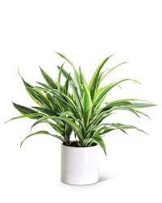

Common Plants
Many people decorate the insides of their homes with flourishing plants
which creates a warm atmosphere. Almost 66% of Americans own at least
one houseplant!
Plants don't only brighten up living spaces, they are also known to
improve productivity! They can also reduve noise pololution, decrease
stress, purify the air, etc. depending on the plant. If you're looking
for something to spiff up your home, look no further! Even if one of
these plants aren't to your liking, the information can broaden your
persepctive and buying options.
Dracaena Lemon Lime
These medium sized plants wil no doubt light up a room. Medium, indirect sunlight is preffered, direct sun will scorch the leaves. Dracaena lemon limes are even capable of growing above 20 feet tall!
Aloe Vera
This plant is very well known for its many medicinal benefits and its antibacterial properties. The inner gel in aloe vera is made up of 99% water! Aloe vera can help treat wounds and aid in treating skin problems. It can also thrive indoors or outdoors, bright sunny spaces are great for Aloe Vera. You only need to water them once a week, too much will cause the roots to rot.


Peace Lillies
This plant is a great choice because they're beginner friendly and can survive in almost any indoor living situation. They can filter harmful chemicals in the air while also looking elegant. They're perfect for minimalistic homes or a room looking for a gentle touch. Peace lillies grow best in indirect sunlight and they can grow under fluorescent lights. Watering it once a week will usually be enough, you can gently spray the leaves the water throughout the summer to keep it hydrated as well.